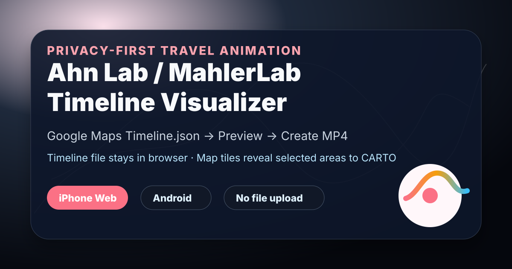

Threads｜g.w.battle 分享 Ahn Lab Google Timeline Visualizer：用 Timeline.json 產生旅程 MP4

一句話摘要
這則 Threads 只貼出工具連結，但值得和前一則 Google Maps Timeline Visualizer 使用案例一起保存：Ahn Lab / MahlerLab 的 `Timeline Visualizer` 是一個把 Google Maps `Timeline.json` 轉成旅程動畫 MP4 的工具，主打在瀏覽器本機處理 Timeline 檔案，不需要登入帳號或上傳完整位置歷史。
工具資訊
- 工具網址：https://ahn-lab.org/google-timeline-visualizer/
- GitHub repo：https://github.com/mahlernim/google-timeline-visualizer
- 官方描述：Visualize your year in travel using your Google Location History / Timeline data。
- Web app meta description：Create a travel animation privately from a Google Maps Timeline export。
- GitHub 狀態：歸檔時約 2002 stars、216 forks，repo metadata 更新日 2026-08-21。
iPhone Web App 使用流程
根據官方 README 與網頁內容，iPhone 使用者可用 Safari 開啟 web app：
- 在 Google Maps 開啟個人頭像。
- 進入 Settings → Personal content → Export Timeline data。
- 將 `Timeline.json` 存到 Files app。
- 回到 Ahn Lab web app，選擇 `Choose Timeline.json`。
- 選擇月份範圍或精確日期、camera movement，並確認 map privacy notice。
- 預覽旅程後點選 `Create MP4`。
- 播放、分享或下載完成的影片。
官方提醒：MP4 產生需要 Safari 16.4 或更新版本與 H.264 encoding 支援；影片產生時需保持分頁開啟。
Android 路線
GitHub README 也提供 Android app 路線：目前不在 Google Play，可從 GitHub releases 下載 APK。Android 的 Timeline 匯出路徑在手機系統設定中：
- Phone Settings。
- Location → Location services → Timeline。
- Export Timeline data → Continue。
- 將 `Timeline.json` 存到容易找到的位置，例如 Downloads。
如果是一般使用者，建議先用 iPhone web app 或官方 release 來源；避免從不明 APK 站下載同名工具。
隱私檢查重點
官方 privacy 文件說明：
- Web app 只讀取使用者明確選擇的 `Timeline.json`。
- Timeline 檔案、路線座標、選取日期、標題、video frames、產生的 MP4 不會上傳到開發者或 application server。
- 影片處理與 MP4 creation 發生在 browser tab。
- Web app 不要求 Google account、裝置 location permission、contacts、photos、advertising identifier 或 broad file permission。
- 站台由 GitHub Pages / Cloudflare 提供，因此一般網路請求仍會暴露 IP、user agent、請求頁面與時間等標準資訊。
- 接受地圖隱私提示後，web app 會向 CARTO 請求 raster map tiles；tile identifiers 對應到旅程中的地理區域，可能讓 CARTO 推知所選旅程涵蓋的地區。
使用建議
- 先用 fictional sample journey 測試介面，不要一開始就載入完整真實 Timeline。
- 如果要公開影片，避免暴露住家、公司、學校、常去醫療院所等敏感地點。
- 儘量只選旅行區間或需要回顧的日期，不要一口氣匯入、輸出完整年度私人軌跡。
- 使用後清理下載資料夾、雲端同步資料夾與分享暫存檔。
- 若使用 Android APK，只從 GitHub repo 的 latest release 下載，並在安裝後關閉「允許未知來源安裝」。
和前一則 Timeline Visualizer 貼文的關係
前一則 tedzted 貼文提供「Google Maps 時間軸匯出與年度移動地圖」的使用情境；這則 g.w.battle 貼文則補上實際工具網址。兩則合在一起，可以形成完整工作流：匯出 `Timeline.json` → 用 Ahn Lab / Timeline Visualizer 預覽 → 產生 MP4 → 分享前做隱私遮蔽。
原始連結
Threads：
https://www.threads.com/@g.w.battle/post/DcSN6WGE_El
工具網址：
https://ahn-lab.org/google-timeline-visualizer/
GitHub repo：
https://github.com/mahlernim/google-timeline-visualizer
Web app privacy：
https://github.com/mahlernim/google-timeline-visualizer/blob/main/docs/privacy-web.md